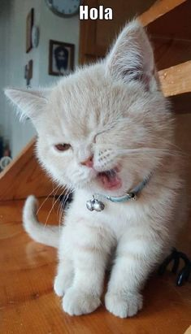

1. Equilibrio: Tienen un órgano en el oído interno que les ayuda a mantener el equilibrio, permitiéndoles caminar por superficies estrechas.
2. Maullidos: Usan el maullido principalmente para comunicarse con los humanos, no entre ellos.
3. Ronroneo: Ronronean tanto cuando están felices como cuando están asustados o heridos, ayudando a calmarse.
4. Sueño: Duermen entre 12 y 16 horas al día para conservar energía.
5. Garras retráctiles: Sus garras se pueden ocultar, manteniéndolas afiladas y protegidas.
6. Visión nocturna: Tienen excelente visión en la oscuridad gracias a una capa reflectante en sus ojos.
7. Cola: La posición de su cola indica su estado de ánimo: erguida para confianza, baja para miedo.
8. Silenciosos: Sus almohadillas suaves les permiten caminar sin hacer ruido, ayudando en la caza.
9. Instinto de caza: Conservan instintos de caza y juegan como si persiguieran presas.
10. Diversidad de razas: Existen más de 70 razas de gatos con características únicas.
Alimentación adecuada: Proporciona comida de alta calidad y específica para gatos, asegurando una dieta balanceada.
Agua fresca: Asegúrate de que siempre tenga acceso a agua fresca y limpia.
Visitas al veterinario: Lleva a tu gato al veterinario regularmente para chequeos y vacunas.
Ejercicio: Proporciona juguetes y tiempo de juego para mantenerlo activo y saludable.
Higiene: Limpia la caja de arena frecuentemente y baña a tu gato solo si es necesario.
Rascadores: Coloca rascadores para evitar que rasguñe los muebles y mantener sus garras saludables.
Enriquecimiento ambiental: Proporciona un entorno enriquecido con juguetes, rascadores y lugares seguros para escalar.
Cuidado del pelaje: Cepilla a tu gato regularmente para evitar enredos y reducir la caída de pelo.
Identificación: Asegúrate de que tu gato tenga una identificación adecuada, como un collar con una placa o un microchip.
Amor y atención: Dedica tiempo a acariciarlo y jugar con él para fortalecer el vínculo entre ustedes.
1. Pollo cocido: Rico en proteínas y fácil de digerir.
2. Pescado: Como el atún o el salmón, es una buena fuente de ácidos grasos omega-3 (en moderación).
3. Carne de res: Proporciona proteínas y hierro.
4. Pavo: Bajo en grasa y una excelente fuente de proteínas.
5. Hígado: Rico en vitaminas, pero debe darse en pequeñas cantidades.
6. Comida seca para gatos:Balanceada y formulada específicamente para satisfacer sus necesidades nutricionales.
7. Comida húmeda para gatos:Ayuda a mantener la hidratación y es más apetitosa para algunos gatos.
8. Arroz cocido: Puede ser una opción para ayudar a la digestión, pero no debe ser la base de la dieta.
9. Verduras cocidas:Como zanahorias o guisantes, en pequeñas cantidades, pueden ser beneficiosas.
10.Suplementos de taurina:Importante para la salud del corazón y la visión de los gatos.
1. Ratones de juguete: Perfectos para el instinto de caza.
2. Bolas de lana: Fáciles de atrapar y jugar.
3. Varitas con plumas: Fomentan el ejercicio y la interacción.
4. Juguetes con catnip: Atraen la atención y estimulan el juego.
5. Juguetes interactivos: Desafían la mente y mantienen a los gatos entretenidos.
6. Rascadores: Ayudan a mantener las garras en buen estado y son divertidos.
7. Túneles para gatos: Proporcionan un lugar divertido para explorar y esconderse.
8. Pelotas con sonido: Estimulan el instinto de caza y el juego.
9. Juguetes de cuerda: Ideales para jugar a tirar y atrapar.
10. Juguetes automáticos: Se mueven solos y mantienen al gato activo.